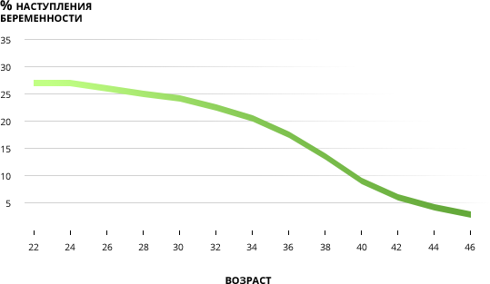
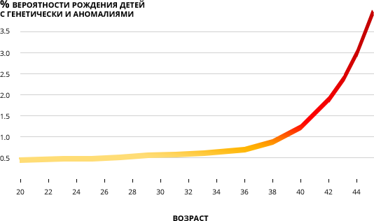
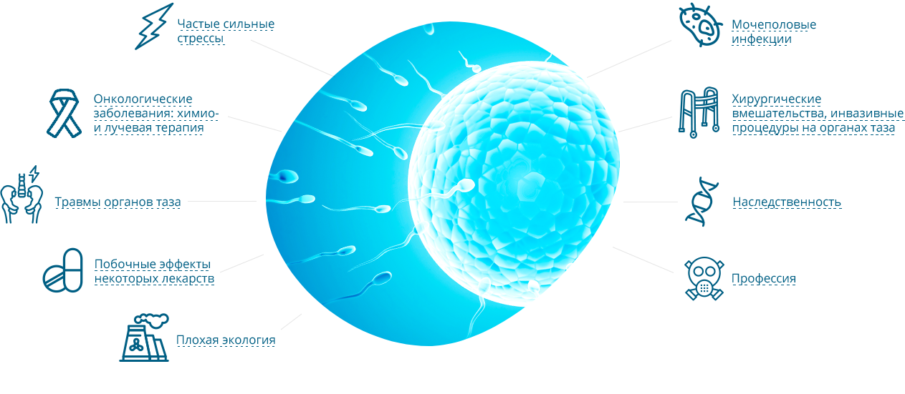
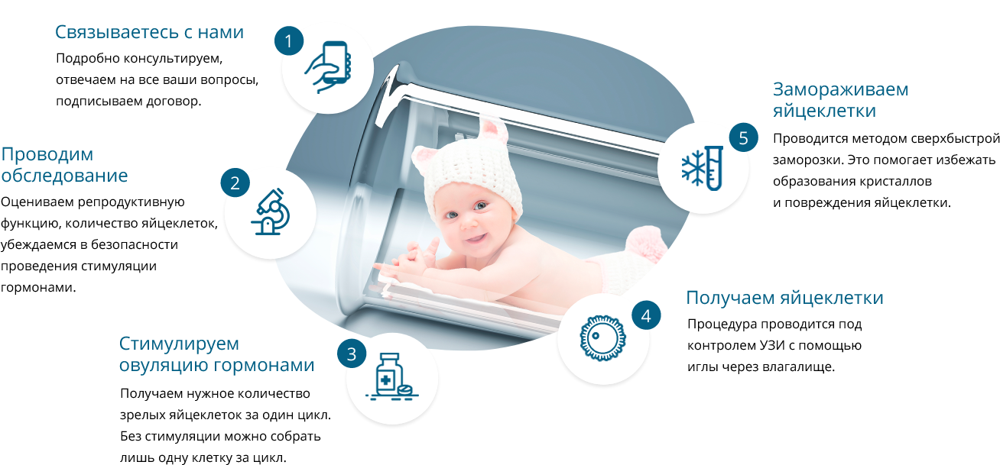
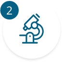
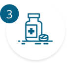
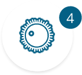
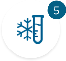

Если вы планируете беременность после 35…
Беременность после 35 лет — нормальное явление среди современных женщин. Многие
откладывают рождение
ребенка, потому что хотят сначала «пожить для себя», сделать карьеру,
чего-то добиться в жизни. Это
разумно.
У 35-летней женщины вероятность наступления беременности во время одного цикла составляет лишь
20%.
Это означает, что 80% женщинам придется повторить попытку в следующем цикле. И
она не обязательно
окажется успешной. К 40 годам шансы снижаются до 5%.В первую
очередь это связано со снижением
овариального резерва — в яичниках остается все меньше яйцеклеток,
готовых к овуляции и
оплодотворению.

Шансы забеременеть в одном цикле в зависимости от возраста женщины
>25%
<5%
И это не единственная проблема. После 35 лет повышается вероятность рождения
ребенка с синдромом
Дауна и другими генетическими
нарушениями, а также растет риск самопроизвольного прерывания
беременности – с 11,4% в возрасте 33–34 года до 36,6%
после 42 лет. Это также может происходить из-за
хромосомных нарушений у плода.

Вероятность рождения ребенка с синдромом Дауна в зависимости от возраста женщины
<0.5%
>3.5%
Какие факторы снижают
шансы на наступление беременности?

Современная репродуктивная медицина
предлагает эффективные решения.
Каждая женщина может заранее сохранить свои яйцеклетки
в замороженном состоянии в
специализированном криобанке.
Один из крупнейших в России – Репробанк.
Какие факторы снижают
шансы на наступление беременности?
Часеые сильные стрессы
Побочные эффекты некоторых лекарств
Плохая экология
Онкологические заболевания: химио-и лучевая терапия

Мочеполовые инфекци
Наследственность
Травмы органов таза
Хирургические вмешательства, инвазивные процедуры на органах таза

Профессия
Современная репродуктивная медицина
предлагает эффективные решения.
Каждая женщина может заранее сохранить свои яйцеклетки
в замороженном состоянии в
специализированном криобанке.
Один из крупнейших в России – Репробанк.
Фиксированная стоимость услуг.
Без переплат.
Репробанк предлагает услугу заморозки яйцеклеток по самым
выгодном в России ценам.
Сравните
наши расценки с прайсами
большинства клиник ЭКО и вы убедитесь в этом сами.
Возможны
два
варианта:
Сохранить только для себя
Все ваши яйцеклетки находятся в вашем
персональном хранилище, использовать
их можете
только вы.
В стоимость услуги включено: медицинское
обследование, стоимость препаратов для
гормональной стимуляции, забор яйцеклеток,
заморозка их и закладка на хранение.
180 000 P
Сохранить для себя
и помочь другим парам
Бесплатная заморозка яйцеклеток
Часть ваших яйцеклеток может быть
использована в качестве донорских.
Помогите
женщинам,
которые не могут
иметь детей, а мы совершенно бесплатно
поможем вам.
180 000 P
Кому в первую очередь стоит
задуматься о заморозке яйцеклеток?
- Вы планируете беременность после 35 лет
- Вы страдаете заболеванием, которое может негативно повлиять на вашу фертильность
- Вы проходите ЭКО и для последующих беременностей рекомендуется сохранить
не только эмбрионы, но и яйцеклетки - Вам предстоит лечение, из-за побочных эффектов которого в будущем вы, возможно, не сможете иметь детей
Банк половых клеток Репробанк:
ваше будущее в надежных руках!
-
Обеспечим сохранность самого ценного!
Наше криохранилище оснащено современным оборудованием и предусмотрены все необходимые меры, чтобы обеспечить сохранность ваших яйцеклеток: хранение в парах жидкого азота, оптимальная температура хранения, возможность 3 недель автономной работы.
-
Всё под контролем!
Женщины доверяют нам самое ценное – по сути инвестицию в свое будущее. Это большая ответственность. Поэтому у нас действует многоступенчатая система безопасности:
- Ваши яйцеклетки хранятся в индивидуальной ячейке, которой присвоен уникальный номер в электронной базе. Каждая пробирка в ячейке промаркирована специальным цветом и вашим уникальным кодом.
- Мы перевозим материал в специальных контейнерах. Каждый из них
может обеспечить сохранность яйцеклеток в течение 12 суток, находится
в специальном защитном кожухе и защищен пломбой.
-
Не важно, в какой клинике и у какого врача
вы решите забеременетьМы не привязаны ни к одной клинике ЭКО, а это дает вам преимущества: самые низкие цены в РФ, своя служба транспортировки, доставка в любой центр ЭКО.
Как сохранить яйцеклетки:
Всего 5 шагов!

Получить консультацию специалиста
Получить консультацию специалиста

Получить консультацию специалиста
Получить консультацию специалиста

Получить консультацию специалиста
Получить консультацию специалиста

Получить консультацию специалиста
Получить консультацию специалиста

Получить консультацию специалиста
Получить консультацию специалиста
Заморозка яйцеклеток — это ваше биострахование, пожалуй, самая ценная инвестиция в вашей жизни.
Мы понимаем, насколько это для вас важно, поэтому создали все условия для надежного и безопасного хранения ваших половых клеток, чтобы в будущем вы смогли успешно забеременеть и родить здорового малыша.
Деревянко Анастасия Юрьевна
старший врач Репробанка
Ответы на частые вопросы
Это одно из самых частых опасений у женщин, обращающихся в наш криобанк. На самом деле всё не так страшно. Да, действительно, иногда гормоны приводят к синдрому гиперстимуляции яичников. Но это осложнение встречается не так часто, особенно если врачи предварительно проверили здоровье женщины, оценили риски и противопоказания, а введение гормональных препаратов осуществляется по всем правилам. Чаще всего синдром гиперстимуляции яичников протекает в легкой форме и проявляется такими симптомами, как небольшие боли в животе, вздутие, тошнота, рвота, увеличение веса более чем на 3 кг. Тяжелые формы встречаются не более чем в 1–2% случаев.
Если женщине противопоказаны гормональные препараты, или она сама не хочет их применять, можно получить яйцеклетки в естественном цикле. Для того чтобы собрать нужное количество, процедуру придется повторить в нескольких циклах.
Закрыть ответ
Это одно из самых частых опасений у женщин, обращающихся в наш криобанк. На самом деле всё не так страшно. Да, действительно, иногда гормоны приводят к синдрому гиперстимуляции яичников. Но это осложнение встречается не так часто, особенно если врачи предварительно проверили здоровье женщины, оценили риски и противопоказания, а введение гормональных препаратов осуществляется по всем правилам. Чаще всего синдром гиперстимуляции яичников протекает в легкой форме и проявляется такими симптомами, как небольшие боли в животе, вздутие, тошнота, рвота, увеличение веса более чем на 3 кг. Тяжелые формы встречаются не более чем в 1–2% случаев.
Если женщине противопоказаны гормональные препараты, или она сама не хочет их применять, можно получить яйцеклетки в естественном цикле. Для того чтобы собрать нужное количество, процедуру придется повторить в нескольких циклах.
Закрыть ответ
Это одно из самых частых опасений у женщин, обращающихся в наш криобанк. На самом деле всё не так страшно. Да, действительно, иногда гормоны приводят к синдрому гиперстимуляции яичников. Но это осложнение встречается не так часто, особенно если врачи предварительно проверили здоровье женщины, оценили риски и противопоказания, а введение гормональных препаратов осуществляется по всем правилам. Чаще всего синдром гиперстимуляции яичников протекает в легкой форме и проявляется такими симптомами, как небольшие боли в животе, вздутие, тошнота, рвота, увеличение веса более чем на 3 кг. Тяжелые формы встречаются не более чем в 1–2% случаев.
Если женщине противопоказаны гормональные препараты, или она сама не хочет их применять, можно получить яйцеклетки в естественном цикле. Для того чтобы собрать нужное количество, процедуру придется повторить в нескольких циклах.
Закрыть ответ
Это одно из самых частых опасений у женщин, обращающихся в наш криобанк. На самом деле всё не так страшно. Да, действительно, иногда гормоны приводят к синдрому гиперстимуляции яичников. Но это осложнение встречается не так часто, особенно если врачи предварительно проверили здоровье женщины, оценили риски и противопоказания, а введение гормональных препаратов осуществляется по всем правилам. Чаще всего синдром гиперстимуляции яичников протекает в легкой форме и проявляется такими симптомами, как небольшие боли в животе, вздутие, тошнота, рвота, увеличение веса более чем на 3 кг. Тяжелые формы встречаются не более чем в 1–2% случаев.
Если женщине противопоказаны гормональные препараты, или она сама не хочет их применять, можно получить яйцеклетки в естественном цикле. Для того чтобы собрать нужное количество, процедуру придется повторить в нескольких циклах.
Закрыть ответ
Это одно из самых частых опасений у женщин, обращающихся в наш криобанк. На самом деле всё не так страшно. Да, действительно, иногда гормоны приводят к синдрому гиперстимуляции яичников. Но это осложнение встречается не так часто, особенно если врачи предварительно проверили здоровье женщины, оценили риски и противопоказания, а введение гормональных препаратов осуществляется по всем правилам. Чаще всего синдром гиперстимуляции яичников протекает в легкой форме и проявляется такими симптомами, как небольшие боли в животе, вздутие, тошнота, рвота, увеличение веса более чем на 3 кг. Тяжелые формы встречаются не более чем в 1–2% случаев.
Если женщине противопоказаны гормональные препараты, или она сама не хочет их применять, можно получить яйцеклетки в естественном цикле. Для того чтобы собрать нужное количество, процедуру придется повторить в нескольких циклах.
Закрыть ответ
Это одно из самых частых опасений у женщин, обращающихся в наш криобанк. На самом деле всё не так страшно. Да, действительно, иногда гормоны приводят к синдрому гиперстимуляции яичников. Но это осложнение встречается не так часто, особенно если врачи предварительно проверили здоровье женщины, оценили риски и противопоказания, а введение гормональных препаратов осуществляется по всем правилам. Чаще всего синдром гиперстимуляции яичников протекает в легкой форме и проявляется такими симптомами, как небольшие боли в животе, вздутие, тошнота, рвота, увеличение веса более чем на 3 кг. Тяжелые формы встречаются не более чем в 1–2% случаев.
Если женщине противопоказаны гормональные препараты, или она сама не хочет их применять, можно получить яйцеклетки в естественном цикле. Для того чтобы собрать нужное количество, процедуру придется повторить в нескольких циклах.
Закрыть ответ
Это одно из самых частых опасений у женщин, обращающихся в наш криобанк. На самом деле всё не так страшно. Да, действительно, иногда гормоны приводят к синдрому гиперстимуляции яичников. Но это осложнение встречается не так часто, особенно если врачи предварительно проверили здоровье женщины, оценили риски и противопоказания, а введение гормональных препаратов осуществляется по всем правилам. Чаще всего синдром гиперстимуляции яичников протекает в легкой форме и проявляется такими симптомами, как небольшие боли в животе, вздутие, тошнота, рвота, увеличение веса более чем на 3 кг. Тяжелые формы встречаются не более чем в 1–2% случаев.
Если женщине противопоказаны гормональные препараты, или она сама не хочет их применять, можно получить яйцеклетки в естественном цикле. Для того чтобы собрать нужное количество, процедуру придется повторить в нескольких циклах.
Закрыть ответ
Задать свой вопрос
Имя
Телефон
Email
Текст вопроса